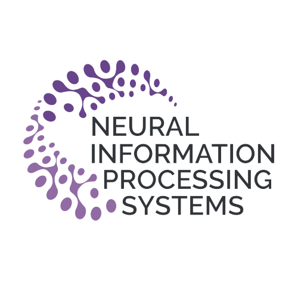
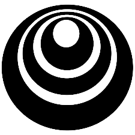

I like to work simultaneously on fundamental R&D in terms of systems which includes Neural Network Architectures (on every domain. i.e. CV, NLP etc.), Cellular Automaton & Swarm Intelligence (long term). Working as a Junior Software Engineer at AriSaf Tech Ltd on an in-house Deep Learning based project. Previously, I was a Research Assistant at Department of CSE, UIU where I worked on the project, BWriterGuide which was funded by ICT Ministry & part of ICT Innovation Fund. I also served as a Research Volunteer at CRL - UVA & Student Volunteer at NeurIPS 2020. Before that, I have completed my internship from CSIR - CDRI, UP, India.
My current (personal) involvements are the following:
Experiences
Professional Experiences
 Junior Software Engineer at AriSaf Tech Ltd.
Junior Software Engineer at AriSaf Tech Ltd.
November 2020 - Present
Working on an in-house deep learning based product (Core Engine).
Brainstorming on in-house product development (multiple). Worked on SRS, HLD, LLD for the projects.
Assisting colleagues on soft skills development & English speaking.
 Research Assistant at Dept. of Computer Science & Engineering, United International University.
Research Assistant at Dept. of Computer Science & Engineering, United International University.
February 2020 - June 2020
Worked on the govt. funded project: BWriterGuide. My duty was the enhancement of Bengali OCR System & deployment of all modules for the project.
Remote ML Research Intern at CSIR-Central Drug Research Institute, UP, India
December 2019 - February 2020
Worked with Dr Sukant Khurana with his data analysis team on Multiple Sclerosis disease in the sector of Computer Vision. I worked on the hypothesis of 7 different lesion features & how their changes can affect EDSS scores.
Volunteer Experiences

Student Volunteer at NeurIPS
November 2020
Research Volunteer at Collaborative Robotics Lab (CRL) - University of Virginia
June 2020 - October 2020
Worked under Dr Tariq Iqbal & Md Mofijul Islam on a multimodal based action recognition learning model project. Competed in Hateful Memes competition hosted by FB & DrivenData.
Publications
Preprints
Dual phase convolutional neural network based system aimed at small rice grain dataset for disease identification
Tashin Ahmed, Chowdhury Rafeed Rahman, Md. Faysal Mahmud Abid
Target Journal - Biosystems Engineering
Automatic Signboard Detection and Localization in Densely Populated Developing Cities
Md. Sadrul Islam Toaha, Chowdhury Rafeed Rahman, Sakib Bin Asad, Tashin Ahmed, Mahfuz Ara Proma, S.M. Shahriar Haque
Target Publication - Journal of Visual Communication and Image Representation
Classification and understanding of cloud structures via satellite images with EfficientUNet
Tashin Ahmed, Noor Hossain Nuri Sabab
Target Journal - Computers & Geosciences
Competitions
Completed
 Google Research Football with Manchester City F.C.
Google Research Football with Manchester City F.C.
Bronze Tier.
Top 6%.
 Halite by Two Sigma
Halite by Two Sigma
Bronze Tier.
Top 8%.
Rock, Paper, Scissors
Applied Markov Agent
Ranked top 21%.
 SIIM-ISIC Melanoma Classification
SIIM-ISIC Melanoma Classification
Applied EfficientNet x ensembling.
Ranked top 23%.
 Jigsaw Multilingual Toxic Comment Classification
Jigsaw Multilingual Toxic Comment Classification
Applied Custom CNN based architecture.
Ranked top 25%.
 Plant Pathology 2020 - FGVC7
Plant Pathology 2020 - FGVC7
Applied EfficientNet x ensembling.
Ranked top 26%.
M5 Forecasting - Accuracy
Estimation of the unit sales of Walmart retail goods
Ranked top 58%.
 ALASKA2 Image Steganalysis
ALASKA2 Image Steganalysis
Applied various EfficientNet architecture with hyperparameter optimization.
Ranked top 62%.
TReNDS Neuroimaging
Multiscanner normative age and assessments prediction with brain function, structure, and connectivity. Applied SVM x RAPIDS.
Ranked top 66%.
Starter
 Connect X
Connect X
Applied Proximal Policy Optimization (PPO)
Ranked top 30%.
 Digit Recognizer
Digit Recognizer
Applied custom CNN.
Ranked top 10%.
 Real or Not? NLP with Disaster Tweets
Real or Not? NLP with Disaster Tweets
Applied Simple Logistic Regression model.
Ranked top 20%.
Housing Prices Competition
Ranked top 15%.
Projects
Games & Simulations
TETRIS
Single player Tetris game created in C++ & Java both. Graphics added for both version. 10 different levels are created depending on play time with addictive scoring system.
 LIFE
LIFE
Zero-player game for observing cellular automaton & evaluation of their growth. Recreation of Conway's game of Life using C language & OpenGL.
MAZE
A maze creator algorithm which creates random mazes using OLC Engine & have GUI written in C++ comes with automated maze solver plus a game to solve maze puzzle. Both program tested on TURBO C++.
Courses
Hosted by Coursera

DeepLearning.AI Tensorflow Developer: Professional Certificate
deeplearning.ai
Grade: 93.785%
Data-driven Astronomy
University of sydney
Grade: 89%